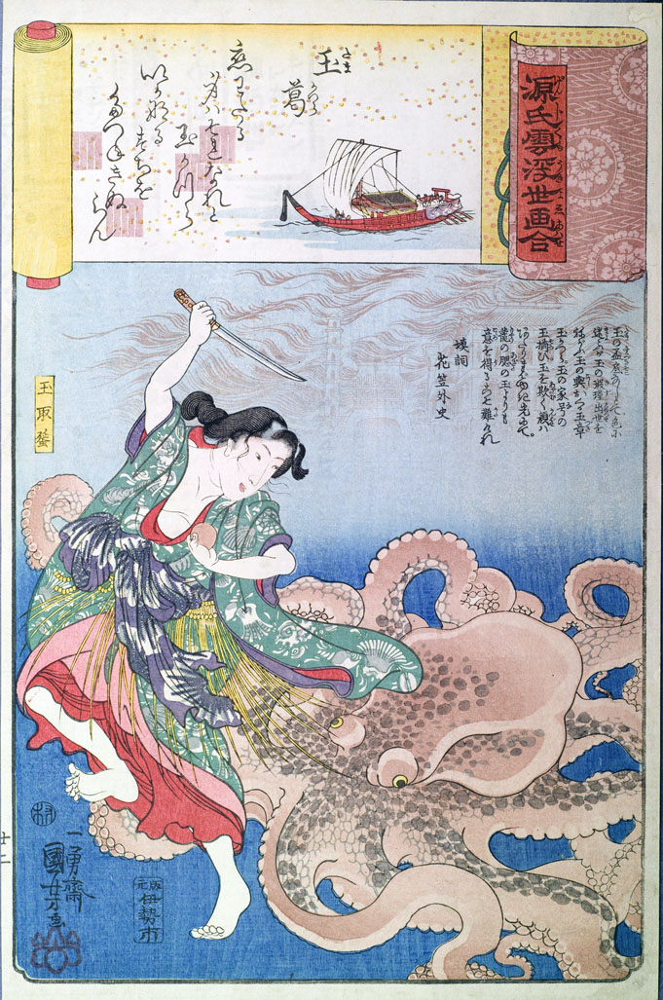

大蛸。全身が赤く、薄黒い斑のような模様が入っている。身をくねらせて、女に迫っている。
著作者：一勇齋國芳（歌川國芳）／出典：親書誌：U426_nichibunken_0140：源氏雲浮世画合玉葛玉取蜑；ゲンジグモウキヨエアワセタマカズラタマトリアマ／日付：2009／資源識別子：U426_nichibunken_0140_0001_0000
Copyright (c)2010- International Research Center for Japanese Studies, Kyoto, Japan. All rights reserved.